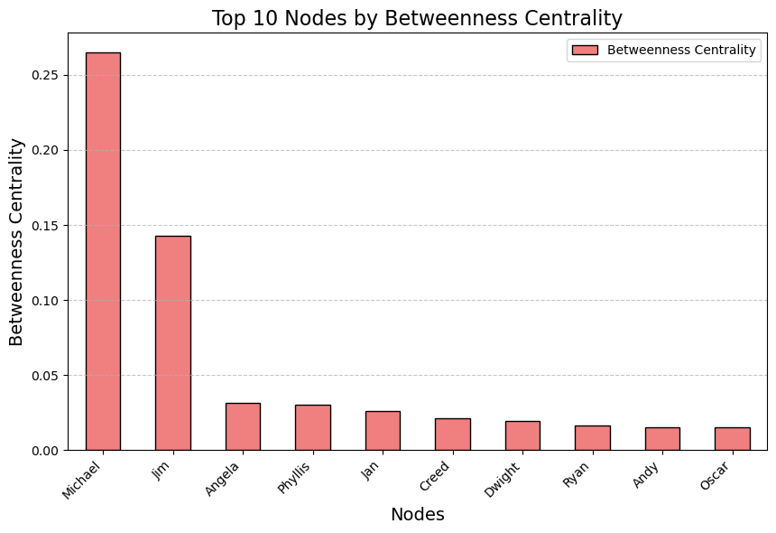
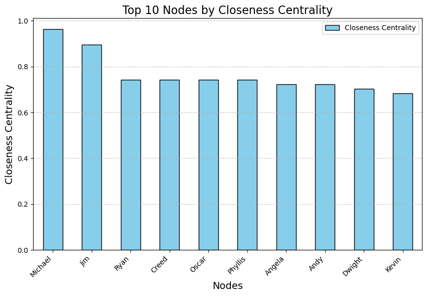

Unveiling The Office Season 4 Dynamics
Relationship Analysis of Season 4 Characters using Selenium, SpaCy, and NetworkX
Click here for interactive Network Graph
This project is something I'm really passionate about. Initially, I wanted to find out which characters spoke the most in the show. Obviously, Michael would be the top speaker, but who would be second? This exploration evolved into identifying characters frequently mentioned together or sharing the most scenes. I employed Spacy for Natural Language Processing, mainly extracting character names from each sentence in the script and tallying how often each character's name appeared within a 5-sentence window. Using Selenium, I scraped season 4 scripts from a website and saved them as a text file. Subsequently, I merged all the scripts into one comprehensive season 4 script. With NetworkX for network analysis, I delved into unraveling the intricate interactions among the characters. Additionally, the Communities library assisted in grouping characters into communities based on their relatedness.
Degree centrality in this project would quantify the number of interactions or connections each character has with others in the network. Characters with high degree centrality would be those engaged in numerous interactions, suggesting a higher level of social activity or prominence within the storyline.
Betweenness centrality would identify characters who play a pivotal role in connecting different groups of characters or facilitating communication within the storyline. Characters with high betweenness centrality act as bridges, influencing the flow of interactions between various character clusters.
Closeness centrality would highlight characters who quickly interact with a diverse set of other characters in the network. Characters with high closeness centrality may be considered central figures in the storyline, able to interact efficiently with a broad range of other characters.
Each centrality measure provides a unique perspective on character importance within the Season 4 storyline. Degree centrality identifies socially active characters, betweenness centrality reveals characters crucial for communication flow, and closeness centrality showcases characters with efficient interaction capabilities. Together, these centrality measures offer a comprehensive understanding of the dynamics and significance of each character in the network of interactions within the season.